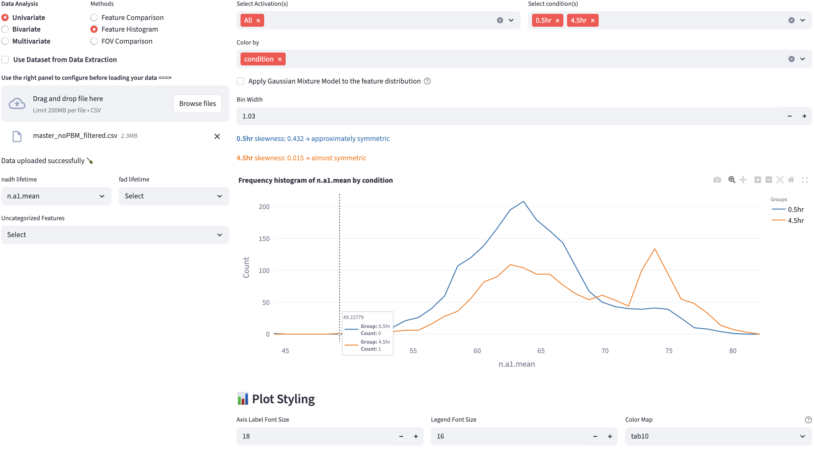

14 Feature Histogram
Feature histograms give an instant readout of each group’s center, spread, skew and any multi-peaked shape that raw tables hide. FLIM Playground plots a histogram for each group based on the selected numerical feature. Additionally, the Gaussian Mixture Model mode can help find subcomponents of each histogram in an unsupervised way. To quantify the distribution heterogeneity, normalized H-index is calculated for each group.

14.2 Histogram Mode
With a single click, users can switch between the histogram mode and the Gaussian Mixture Model mode. When the checkbox is unchecked, the histogram mode is selected.
Histogram mode plots a histogram of the selected numerical feature for each group. The histogram bin width is user-controllable, with the default bin width determined automatically as the minimum bin width between the ‘sturges’ and ‘fd’ estimators (see here for more details). The maximum bin width is set to one-third of the range of the data. The step size is set to \(1/50\) of the range.
Additionally, the skewness of the distribution is computed and displayed1.
A rule of thumb categorization of skewness is as follows:
- Strongly left-skewed: < -1
- Moderately left-skewed: -1 to -0.5
- Approximately symmetric: -0.5 to -0.25 and 0.25 to 0.5
- Almost symmetric: -0.25 to 0.25
- Moderately right-skewed: 0.5 to 1
- Strongly right-skewed: > 1
However, the skewness is just one way to quantify the distribution shape. In the example above, the orange distribution was clearly bimodal, but the skewness alone could not capture this. In applications where the distribution is multi-modal, and each mode can represent certain subpopulations (e.g. a cell type, a cell state, a cell cycle phase, etc.), users can use the Gaussian Mixture Model mode to find subcomponents of each distribution in an unsupervised way.
14.3 Gaussian Mixture Model Mode
A Gaussian Mixture Model (GMM) represents a dataset as a weighted sum of multiple Gaussian (normal) distributions, each defined by its own mean (\(\mu\)) and (co)variance (\(\sigma^2\)). By estimating the component parameters and their weights (mixing coefficients) from the data—commonly using the Expectation-Maximization (EM) algorithm—GMMs can capture complex, multimodal distributions that a single Gaussian cannot.
14.3.1 Fit Gaussian Mixture Models
- Fits GMMs on the selected numerical feature up to
Max Componentscomponents, each of which has its component weights (\(w_i\)), means (\(\mu_i\)) and variances (\(\sigma_i^2\)). - Retains only valid models in which every component has weight at least
Min Weight Threshold(the weights of all components add to 1). - FLIM Playground will choose the valid model with the lowest BIC score that penalizes the model complexity to avoid overfitting.
14.3.2 Heterogeneity index
To quantify the subpopulation structure, based on the GMM fit, FLIM Playground computes an “H‑index” for each group as a weighted entropy‑distance: each component contributes according to its weight’s uncertainty (\(-w_i \log w_i\))2 scaled by how far its mean \(\mu_i\) sits from the overall mixture mean \(\bar\mu = \sum_{i=1}^k w_i\,\mu_i\), normalized by the standard deviation of \(\mu_i\)s.
\[
H =\sum_{i=1}^{k}\bigl(-w_i \log w_i\bigr)\,d_i, \qquad d_i \;=\;
\frac{\lvert\mu_i - \bar{\mu}\rvert}{\sigma}
\]
14.3.3 Classification
- Users can choose to perform intersection thresholding or hard assignment to determine which GMM component each data point belongs to. It appends a new categorical feature column called
GMM_Group(recognizable by methods in Data Analysis as a categorical feature) to the filtered dataset, the values of which are{color_group}_1,{color_group}_2, etc. In the example above, the color groups were created by 0.5hr and 4.5hr because the user colored the data byhour. The classification result can be saved by clicking:
Intersection thresholding
- Once the GMM is estimated, thresholds can be obtained by locating the intersection points of adjacent component densities: \[ w_1\,\mathcal{N}(x;\mu_1,\sigma_1^2) \;=\; w_2\,\mathcal{N}(x;\mu_2,\sigma_2^2) \] where \(w_1, \mu_1, \sigma_1\) are the mixture weight, mean, and standard deviation of the first Gaussian component, respectively, and \(w_2, \mu_2, \sigma_2\) those of the second component.
- The above equation can be formed as a quadratic equation and solved for the unique root lying between \(\mu_1\) and \(\mu_2\). In practice, we bracket this interval and apply a robust one‐dimensional root-finding routine (e.g. Brent’s method) to compute intersection points. Data points are then assigned to the class corresponding to the interval in which they fall.
In rare cases when there is more than one intersection point, the data point is assigned using hard assignment rather than intersection thresholding.
Hard assignment
- For each data point, it computes the posterior probability (responsibility) of each component, and assigns the data point to the component with the highest responsibility.
\[\text{label}(x) = \arg\max_{i} \gamma_i(x)\]
\[\text{where} \quad \gamma_i(x) = \frac{w_i \; \mathcal{N}\bigl(x \mid \mu_i, \sigma_i^2\bigr)}{\sum_{j=1}^K w_j \; \mathcal{N}\bigl(x \mid \mu_j, \sigma_j^2\bigr)}\]
14.3.4 Example
Pham et al. used GMM with hard thresholding to create gates using NAD(P)H \(a_1\) and optical redox ratio. These gates were used to define metabolically stressed and fit cells in their study of the impact of cryopreservation on T cell metabolism.
They compared the GMM-derived gate with cell viability by Trypan blue staining:
It suggests that optical metabolic imaging (OMI) could serve as an early, non-destructive indicator of T cell viability post-thaw.